I am not going to provide an exact sideboard because the cards in it will change based on preference and meta. With that said, here are some suggestions:
Against any sort of graveyard strategy (like Dredge, Living End, or even Abzan), sideboarding can be tough because things like Grafdigger's Cage, Rest in Peace, and Relic of Progenitus are also good sideboard cards against Emeria. The only good option to use is Tormod's Crypt. It is really helpful because it doesn't hurt our graveyard, doesn't cost any mana, and can be brought back with Sun Titan or Renegade Rallier to continue nuking graveyards.
Against burn decks, there are two sideboard plans that can work. The first is to use Kor Firewalker, the absolute best sideboard card for burn in modern, and other life gain (like more Lone Missionary's) to make sure that the opponent's burn spells don't kill you. The second plan is to bring in a ton of counterspells (like Negate, Spell Pierce, or even Spell Queller) to completely lock the burn player out of the game. Remember, Emeria does work well as a tap-out control deck, so many Emeria players will even mainboard Negates. If you do, it is always advised to put the rest of a playset in sideboard.
Tron and Scapeshift are two archtypes in modern that are very troublesome matchups for Emeria, probably the worst. Thankfully, both are based around specific lands being in play. This means that there can still be a chance. Some Emeria decks will play one Sacred Foundry mainboard to splash red for Crumble to Dust, which is the best card against these strategies, but running three colors is already hard enough. If you don't want to splash red, the best options are Surgical Extraction or Spreading Seas. Spreading Seas is good because it effectively cycles and can be recurred for extra value. Surgical Extraction can extract a Tron piece from Tron or Valakut from Scapeshift if one gets Ghost Quarter'ed.
If Tron and Scapeshift are bad matchups, Storm and Ad Nauseam are the absolute worst. Emeria relies on an interactive game with the opponent, and both Storm and Ad Nauseam are completely un-interactive combo decks. The only card that is at all good for either matchup is Eidelon of Rhetoric. It completely hoses Storm, and sets Ad Nauseam back a good amount, making it a lot harder to win. The best part is that if it gets destroyed, a Sun Titan could always get it back. Sometimes the aforementioned counterspells can be helpful, but they do not always work.
If Tron, Scapeshift, Storm, and Ad Nauseam are all of our worst matchups, control decks (specifically Jeskai Control) are our best matchups. Emeria is meant to destroy control. Emeria wants to slow down the game, and so does control. The difference is the Emeria has stuff it wants to do in the late game, whereas control is hoping that its opponent is trying to win as soon as possible, hence being able to counter and control their way to the late game, and soon after victory. That said, the popular opinion is that the way to fight control is with more counterspells (as you may imagine by now, counters are very helpful in Emeria's sideboard). I have my own tech for defeating control with Emeria: Bring in large, synergistic creatures that create enough value to grind out the game against control. My favorites are Reveillark (which I sometimes even play mainboard because of its power), Ephara, God of the Polis, and Emeria Shepherd.
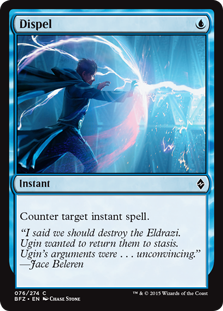 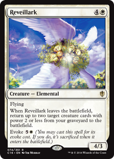 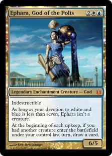 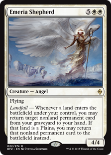A lot of modern decks fall into this category: Affinity, Counters Company, Humans, Knightfall, Eldrazi, Death's Shadow, Merfolk, and to some extent Jund and Abzan. These are all fair matchups for Emeria. Postboard, either side has a chance of winning. With all of these, I would recommend bringing in another Detention Sphere (or other removal), some Supreme Verdicts (or whatever boardwipe you choose), and maybe some lifegain. The only exception is that some may want a Creeping Corrosion or Stony Silence for the affinity matchup. I would recommend only Stony Silence (if at all) because it also hates a bit on Tron.
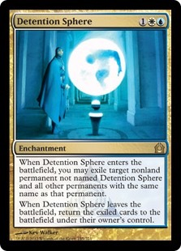 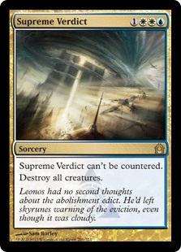 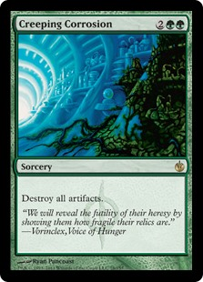 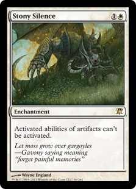Unfortunately, Emeria is a deck that has a lot of good sideboard hate against it. Because of the recursion theme, graveyard hate (like Grafdigger's Cage, Relic of Progenitus, and Rest in Peace) work well against Emeria. The other problem is that Emeria is somewhat reliant on it's nonbasic lands. Not only is our namesake card a nonbasic (which also has its land requirement), but when running three colors without the common fetch/shock/fast land mana base, something like a Blood Moon or Fulminator Mage become really good in the matchup. Even opposing Ghost Quarters or Tectonic Edges can hurt Emeria's tempo. The best ways to proactively sideboard against these cards is with more Detention Spheres or other removal to remove the permanents and Pithing Needle type effects for the Relics, Fulminators, and land-hate lands.
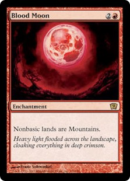 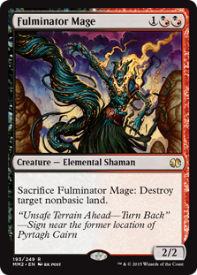 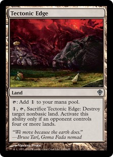